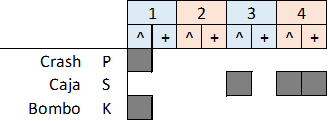
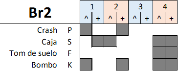
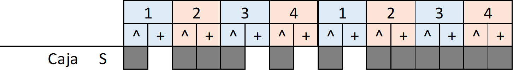

Intro 1: (Intro1: 4+4 + 4+2) Intro 2: (Intro1: 4+4 + 4+1)(K: 1) Castilla 1: (K: 4+4)(R1: 4+4) Castilla 2.1: (R2: 4+4)(R1: 4+4) Castilla 2.2: (R2: 4+4)(R1: 4+3)(Br2: 1) Castilla 3: (Silencio: 4)(R2: 4)(R1: 4+4) Break: (R2: 1)(Br1: 1) Castilla 4.1: (R1: 4+4 + 4+4) Castilla 4.2: (R1: 4+4 + 4+4)
Intro 1: (Intro1: (4+4) + (4+2) ) Re - Sol - Re - La - Re - Sim - La - Re Intro 2: Re - Sol - Re - La - Re - Sim - La - Re (Intro1: 4+4) Sabrá el pinar tejer su hogar, albergue resonar, sabrán los campos respirar, su sol, sudor y paz, (Intro1: 4+1)(K: 1) y ven a ser, a escuchar, el eco de tu andar, y siempre tornarás. Castilla 1: (K: 4+4) Re - La - Sol - La7 (x2) (R1: 4+4) Mi - La - Sol - La7 (x2) Castilla 2.1: (R2: 4+4) Sol - Re - Do - Re7 (x2) (R1: 4+4) La - Re - Do - Re7 (x2) Castilla 2.2: (R2: 4+4) Sol - Re - Do - Re7 (x2) (R1: 4+3)(Br2: 1) La - Re - Do - Re7 La - Re - Do - Fa-Sol Castilla 3: (Silencio: 4)(R2: 4) Do - Sol - Fa - Sol7 (x2) (R1: 4+4) Re - Sol - Fa - Sol7 (x2) (R2: 1)(Br1: 1) La - Si Castilla 4.1: (R1: 4+4) Re - La - Sol - La7 (x2) (R1: 4+4) Mi - La - Sol - La7 (x2) Castilla 4.2: (R1: 4+4) Re - La - Sol - La7 (x2) (R1: 4+4) Mi - La - Sol - La7 Mi - La - Sol - La - Re Vuelve a gritar pon tu voz en lo más pequeño y no aceptes sin más, que da igual, que es un vano empeño. Éste es tu hogar, el lugar donde viste el mundo, una esperanza de ver siempre tu futuro.